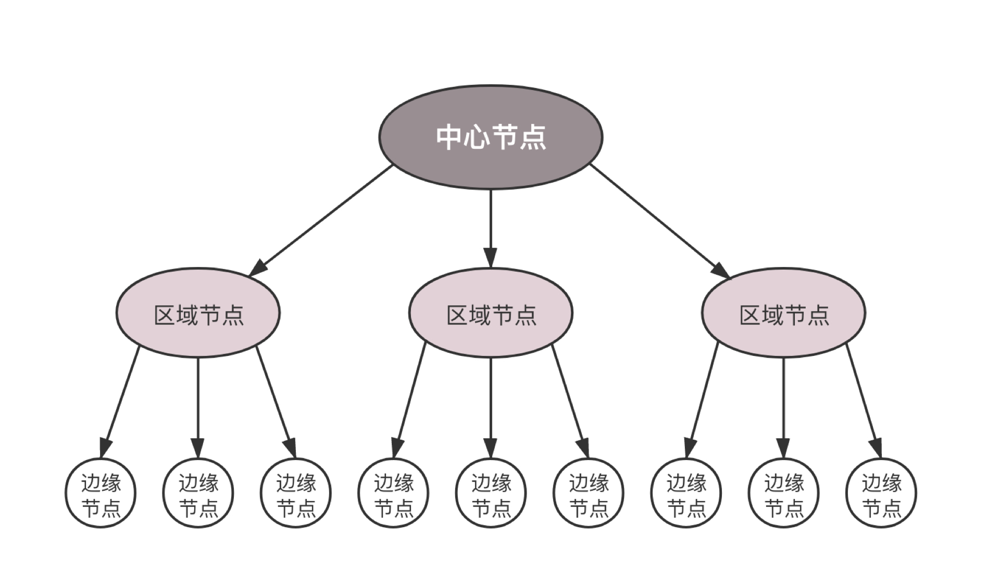

- 00 开篇词 想成为技术牛人？先搞定网络协议！.md.html
- 01 为什么要学习网络协议？.md.html
- 02 网络分层的真实含义是什么？.md.html
- 03 ifconfig：最熟悉又陌生的命令行.md.html
- 04 DHCP与PXE：IP是怎么来的，又是怎么没的？.md.html
- 05 从物理层到MAC层：如何在宿舍里自己组网玩联机游戏？.md.html
- 06 交换机与VLAN：办公室太复杂，我要回学校.md.html
- 07 ICMP与ping：投石问路的侦察兵.md.html
- 08 世界这么大，我想出网关：欧洲十国游与玄奘西行.md.html
- 09 路由协议：西出网关无故人，敢问路在何方.md.html
- 10 UDP协议：因性善而简单，难免碰到“城会玩”.md.html
- 11 TCP协议（上）：因性恶而复杂，先恶后善反轻松.md.html
- 12 TCP协议（下）：西行必定多妖孽，恒心智慧消磨难.md.html
- 13 套接字Socket：Talk is cheap, show me the code.md.html
- 14 HTTP协议：看个新闻原来这么麻烦.md.html
- 15 HTTPS协议：点外卖的过程原来这么复杂.md.html
- 16 流媒体协议：如何在直播里看到美女帅哥？.md.html
- 17 P2P协议：我下小电影，99%急死你.md.html
- 18 DNS协议：网络世界的地址簿.md.html
- 19 HttpDNS：网络世界的地址簿也会指错路.md.html
- 20 CDN：你去小卖部取过快递么？.md.html
- 21 数据中心：我是开发商，自己拿地盖别墅.md.html
- 22 VPN：朝中有人好做官.md.html
- 23 移动网络：去巴塞罗那，手机也上不了脸书.md.html
- 24 云中网络：自己拿地成本高，购买公寓更灵活.md.html
- 25 软件定义网络：共享基础设施的小区物业管理办法.md.html
- 26 云中的网络安全：虽然不是土豪，也需要基本安全和保障.md.html
- 27 云中的网络QoS：邻居疯狂下电影，我该怎么办？.md.html
- 28 云中网络的隔离GRE、VXLAN：虽然住一个小区，也要保护隐私.md.html
- 29 容器网络：来去自由的日子，不买公寓去合租.md.html
- 30 容器网络之Flannel：每人一亩三分地.md.html
- 31 容器网络之Calico：为高效说出善意的谎言.md.html
- 32 RPC协议综述：远在天边，近在眼前.md.html
- 33 基于XML的SOAP协议：不要说NBA，请说美国职业篮球联赛.md.html
- 34 基于JSON的RESTful接口协议：我不关心过程，请给我结果.md.html
- 35 二进制类RPC协议：还是叫NBA吧，总说全称多费劲.md.html
- 36 跨语言类RPC协议：交流之前，双方先来个专业术语表.md.html
- 37 知识串：用双十一的故事串起碎片的网络协议（上）.md.html
- 38 知识串：用双十一的故事串起碎片的网络协议（中）.md.html
- 39 知识串：用双十一的故事串起碎片的网络协议（下）.md.html
- 40 搭建一个网络实验环境：授人以鱼不如授人以渔.md.html
- 加餐1 创作故事：我是如何创作“趣谈网络协议”专栏的？.md.html
- 协议专栏特别福利 答疑解惑1期.md.html
- 协议专栏特别福利 答疑解惑2期.md.html
- 协议专栏特别福利 答疑解惑3期.md.html
- 协议专栏特别福利 答疑解惑4期.md.html
- 协议专栏特别福利 答疑解惑5期.md.html
- 结束语 放弃完美主义，执行力就是限时限量认真完成.md.html
- 捐赠
20 CDN：你去小卖部取过快递么？
上一节，我们看到了网站的一般访问模式。
当一个用户想访问一个网站的时候，指定这个网站的域名，DNS就会将这个域名解析为地址，然后用户请求这个地址，返回一个网页。就像你要买个东西，首先要查找商店的位置，然后去商店里面找到自己想要的东西，最后拿着东西回家。
那这里面还有没有可以优化的地方呢？
例如你去电商网站下单买个东西，这个东西一定要从电商总部的中心仓库送过来吗？原来基本是这样的，每一单都是单独配送，所以你可能要很久才能收到你的宝贝。但是后来电商网站的物流系统学聪明了，他们在全国各地建立了很多仓库，而不是只有总部的中心仓库才可以发货。
电商网站根据统计大概知道，北京、上海、广州、深圳、杭州等地，每天能够卖出去多少书籍、卫生纸、包、电器等存放期比较长的物品。这些物品用不着从中心仓库发出，所以平时就可以将它们分布在各地仓库里，客户一下单，就近的仓库发出，第二天就可以收到了。
这样，用户体验大大提高。当然，这里面也有个难点就是，生鲜这类东西保质期太短，如果提前都备好货，但是没有人下单，那肯定就坏了。这个问题，我后文再说。
我们先说，我们的网站访问可以借鉴“就近配送”这个思路。
全球有这么多的数据中心，无论在哪里上网，临近不远的地方基本上都有数据中心。是不是可以在这些数据中心里部署几台机器，形成一个缓存的集群来缓存部分数据，那么用户访问数据的时候，就可以就近访问了呢？
当然是可以的。这些分布在各个地方的各个数据中心的节点，就称为边缘节点。
由于边缘节点数目比较多，但是每个集群规模比较小，不可能缓存下来所有东西，因而可能无法命中，这样就会在边缘节点之上。有区域节点，规模就要更大，缓存的数据会更多，命中的概率也就更大。在区域节点之上是中心节点，规模更大，缓存数据更多。如果还不命中，就只好回源网站访问了。

这就是CDN分发系统的架构。CDN系统的缓存，也是一层一层的，能不访问后端真正的源，就不打扰它。这也是电商网站物流系统的思路，北京局找不到，找华北局，华北局找不到，再找北方局。
有了这个分发系统之后，接下来，客户端如何找到相应的边缘节点进行访问呢？
还记得我们讲过的基于DNS的全局负载均衡吗？这个负载均衡主要用来选择一个就近的同样运营商的服务器进行访问。你会发现，CDN分发网络也是一个分布在多个区域、多个运营商的分布式系统，也可以用相同的思路选择最合适的边缘节点。

在没有CDN的情况下，用户向浏览器输入www.web.com这个域名，客户端访问本地DNS服务器的时候，如果本地DNS服务器有缓存，则返回网站的地址；如果没有，递归查询到网站的权威DNS服务器，这个权威DNS服务器是负责web.com的，它会返回网站的IP地址。本地DNS服务器缓存下IP地址，将IP地址返回，然后客户端直接访问这个IP地址，就访问到了这个网站。
然而有了CDN之后，情况发生了变化。在web.com这个权威DNS服务器上，会设置一个CNAME别名，指向另外一个域名 www.web.cdn.com，返回给本地DNS服务器。
当本地DNS服务器拿到这个新的域名时，需要继续解析这个新的域名。这个时候，再访问的就不是web.com的权威DNS服务器了，而是web.cdn.com的权威DNS服务器，这是CDN自己的权威DNS服务器。在这个服务器上，还是会设置一个CNAME，指向另外一个域名，也即CDN网络的全局负载均衡器。
接下来，本地DNS服务器去请求CDN的全局负载均衡器解析域名，全局负载均衡器会为用户选择一台合适的缓存服务器提供服务，选择的依据包括：
根据用户IP地址，判断哪一台服务器距用户最近；
用户所处的运营商；
根据用户所请求的URL中携带的内容名称，判断哪一台服务器上有用户所需的内容；
查询各个服务器当前的负载情况，判断哪一台服务器尚有服务能力。
基于以上这些条件，进行综合分析之后，全局负载均衡器会返回一台缓存服务器的IP地址。
本地DNS服务器缓存这个IP地址，然后将IP返回给客户端，客户端去访问这个边缘节点，下载资源。缓存服务器响应用户请求，将用户所需内容传送到用户终端。如果这台缓存服务器上并没有用户想要的内容，那么这台服务器就要向它的上一级缓存服务器请求内容，直至追溯到网站的源服务器将内容拉到本地。
CDN可以进行缓存的内容有很多种。
保质期长的日用品比较容易缓存，因为不容易过期，对应到就像电商仓库系统里，就是静态页面、图片等，因为这些东西也不怎么变，所以适合缓存。

还记得这个接入层缓存的架构吗？在进入数据中心的时候，我们希望通过最外层接入层的缓存，将大部分静态资源的访问拦在边缘。而CDN则更进一步，将这些静态资源缓存到离用户更近的数据中心。越接近客户，访问性能越好，时延越低。
但是静态内容中，有一种特殊的内容，也大量使用了CDN，这个就是前面讲过的[流媒体]。
CDN支持流媒体协议，例如前面讲过的RTMP协议。在很多情况下，这相当于一个代理，从上一级缓存读取内容，转发给用户。由于流媒体往往是连续的，因而可以进行预先缓存的策略，也可以预先推送到用户的客户端。
对于静态页面来讲，内容的分发往往采取拉取的方式，也即当发现未命中的时候，再去上一级进行拉取。但是，流媒体数据量大，如果出现回源，压力会比较大，所以往往采取主动推送的模式，将热点数据主动推送到边缘节点。
对于流媒体来讲，很多CDN还提供预处理服务，也即文件在分发之前，经过一定的处理。例如将视频转换为不同的码流，以适应不同的网络带宽的用户需求；再如对视频进行分片，降低存储压力，也使得客户端可以选择使用不同的码率加载不同的分片。这就是我们常见的，“我要看超清、标清、流畅等”。
对于流媒体CDN来讲，有个关键的问题是防盗链问题。因为视频是要花大价钱买版权的，为了挣点钱，收点广告费，如果流媒体被其他的网站盗走，在人家的网站播放，那损失可就大了。
最常用也最简单的方法就是HTTP头的referer字段， 当浏览器发送请求的时候，一般会带上referer，告诉服务器是从哪个页面链接过来的，服务器基于此可以获得一些信息用于处理。如果refer信息不是来自本站，就阻止访问或者跳到其它链接。
referer的机制相对比较容易破解，所以还需要配合其他的机制。
一种常用的机制是时间戳防盗链。使用CDN的管理员可以在配置界面上，和CDN厂商约定一个加密字符串。
客户端取出当前的时间戳，要访问的资源及其路径，连同加密字符串进行签名算法得到一个字符串，然后生成一个下载链接，带上这个签名字符串和截止时间戳去访问CDN。
在CDN服务端，根据取出过期时间，和当前 CDN 节点时间进行比较，确认请求是否过期。然后CDN服务端有了资源及路径，时间戳，以及约定的加密字符串，根据相同的签名算法计算签名，如果匹配则一致，访问合法，才会将资源返回给客户。
然而比如在电商仓库中，我在前面提过，有关生鲜的缓存就是非常麻烦的事情，这对应着就是动态的数据，比较难以缓存。怎么办呢？现在也有动态CDN，主要有两种模式。
一种为生鲜超市模式，也即边缘计算的模式。既然数据是动态生成的，所以数据的逻辑计算和存储，也相应的放在边缘的节点。其中定时从源数据那里同步存储的数据，然后在边缘进行计算得到结果。就像对生鲜的烹饪是动态的，没办法事先做好缓存，因而将生鲜超市放在你家旁边，既能够送货上门，也能够现场烹饪，也是边缘计算的一种体现。
另一种是冷链运输模式，也即路径优化的模式。数据不是在边缘计算生成的，而是在源站生成的，但是数据的下发则可以通过CDN的网络，对路径进行优化。因为CDN节点较多，能够找到离源站很近的边缘节点，也能找到离用户很近的边缘节点。中间的链路完全由CDN来规划，选择一个更加可靠的路径，使用类似专线的方式进行访问。
对于常用的TCP连接，在公网上传输的时候经常会丢数据，导致TCP的窗口始终很小，发送速度上不去。根据前面的TCP流量控制和拥塞控制的原理，在CDN加速网络中可以调整TCP的参数，使得TCP可以更加激进地传输数据。
可以通过多个请求复用一个连接，保证每次动态请求到达时。连接都已经建立了，不必临时三次握手或者建立过多的连接，增加服务器的压力。另外，可以通过对传输数据进行压缩，增加传输效率。
所有这些手段就像冷链运输，整个物流优化了，全程冷冻高速运输。不管生鲜是从你旁边的超市送到你家的，还是从产地送的，保证到你家是新鲜的。
小结
好了，这节就到这里了。咱们来总结一下，你记住这两个重点就好。
CDN和电商系统的分布式仓储系统一样，分为中心节点、区域节点、边缘节点，而数据缓存在离用户最近的位置。
CDN最擅长的是缓存静态数据，除此之外还可以缓存流媒体数据，这时候要注意使用防盗链。它也支持动态数据的缓存，一种是边缘计算的生鲜超市模式，另一种是链路优化的冷链运输模式。
最后，给你留两个思考题：
这一节讲了CDN使用DNS进行全局负载均衡的例子，CDN如何使用HttpDNS呢？
客户端对DNS、HttpDNS、CDN访问了半天，还没进数据中心，你知道数据中心里面什么样吗？
我们的专栏更新到第20讲，不知你掌握得如何？每节课后我留的思考题，你都有没有认真思考，并在留言区写下答案呢？我会从已发布的文章中选出一批认真留言的同学，赠送学习奖励礼券和我整理的独家网络协议知识图谱。
欢迎你留言和我讨论。趣谈网络协议，我们下期见！
© 2019 - 2023 Liangliang Lee. Powered by gin and hexo-theme-book.